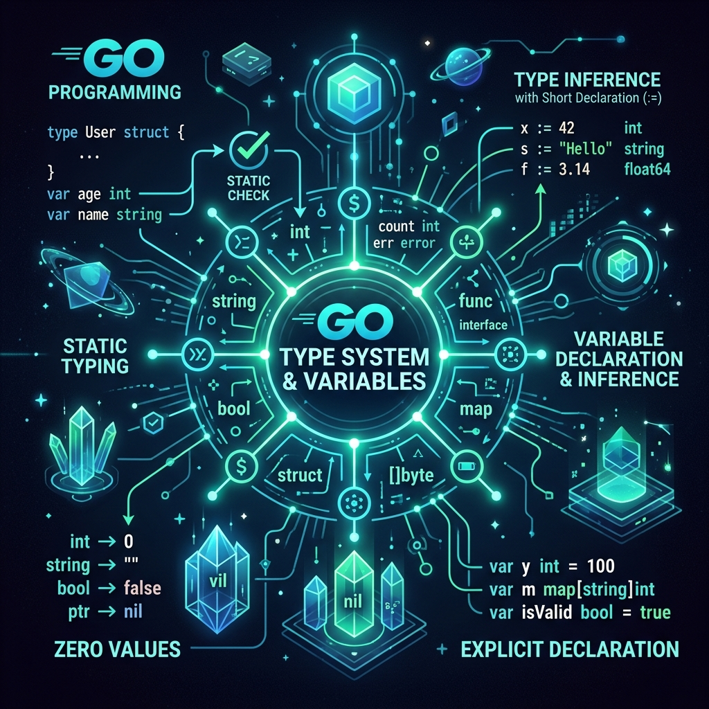
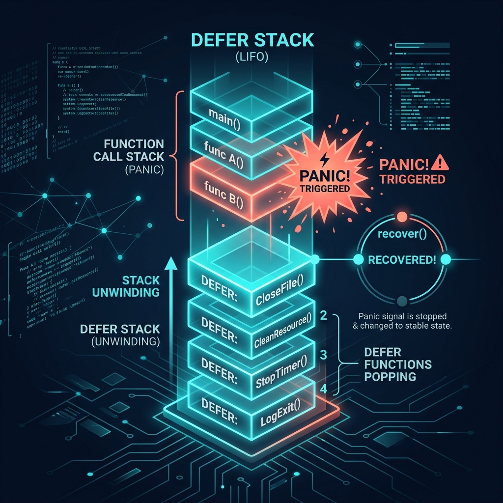
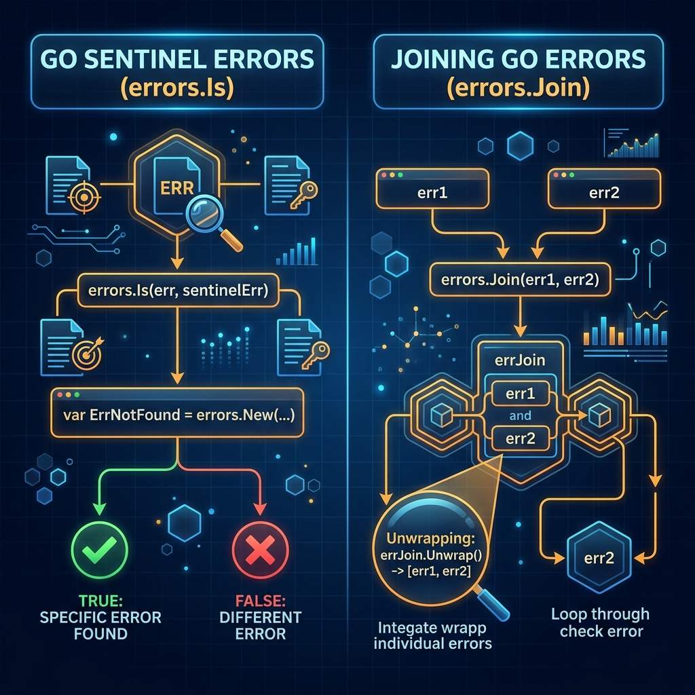
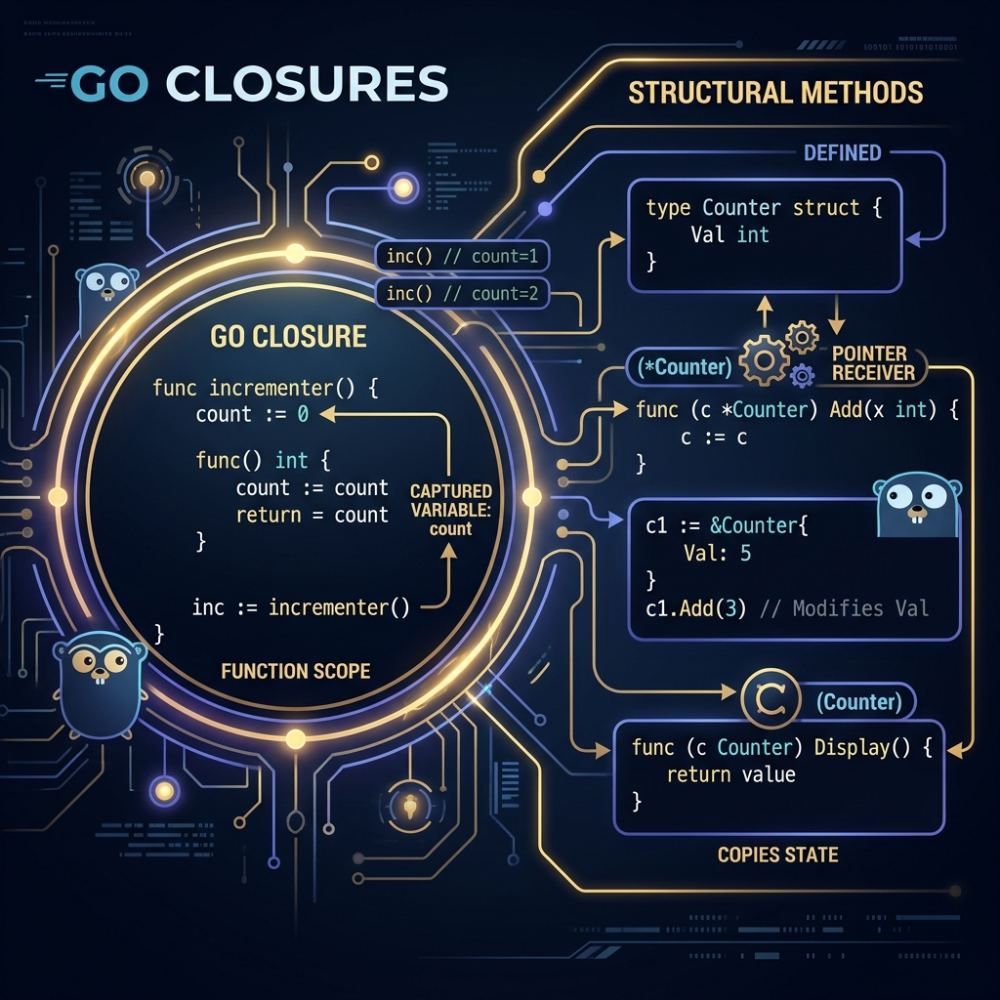
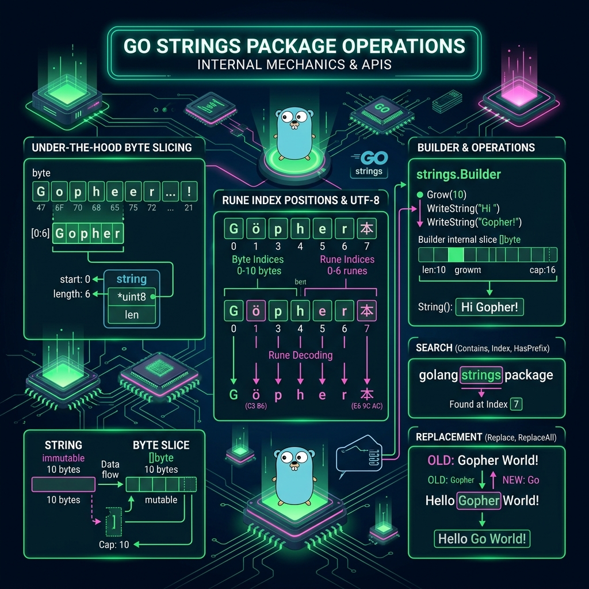
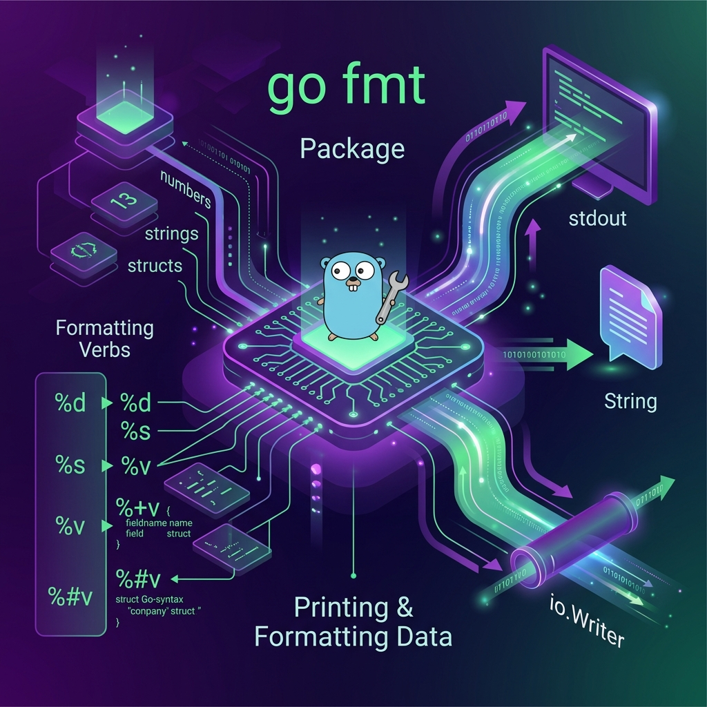
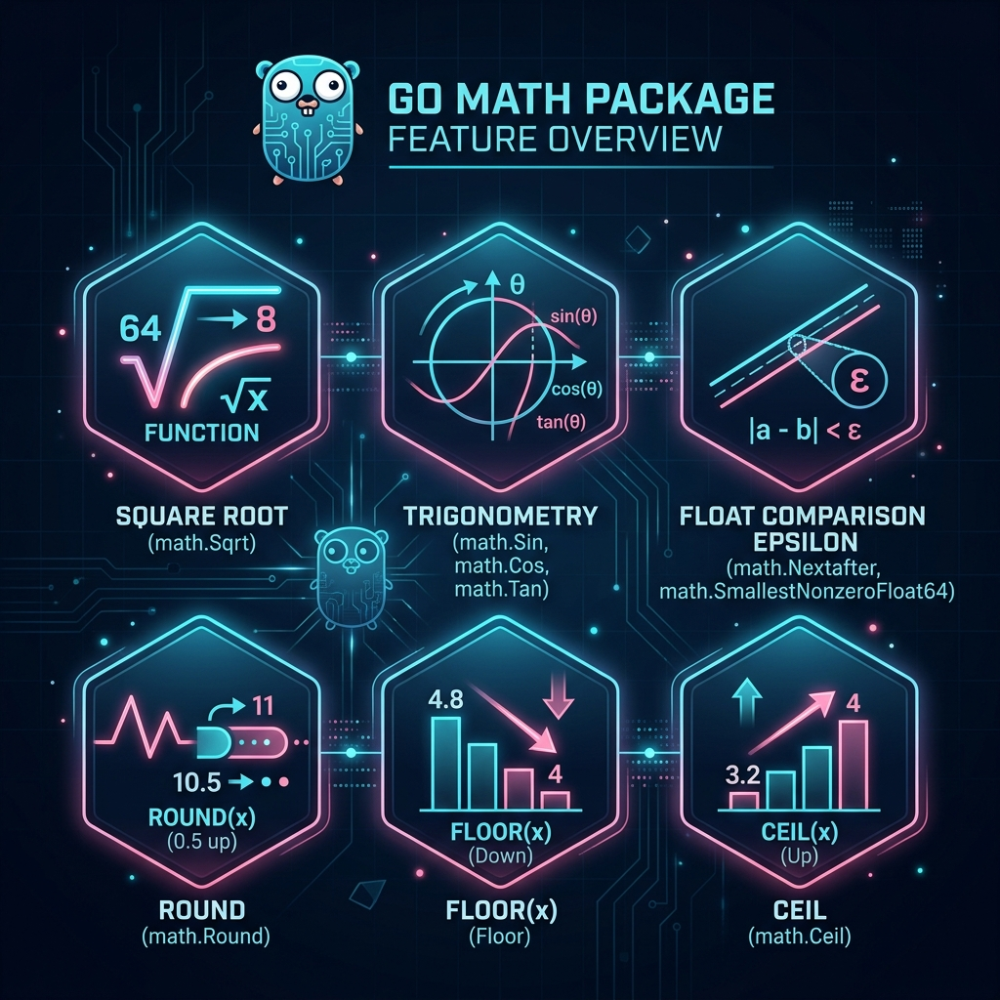

Tài liệu này bao gồm tất cả các chủ đề nền tảng của Go từ Basics (Syntax, Control Flow, Defer/Panic/Recover, Pointers), Errors (Wrapping, Custom, Sentinel, Join), đến Functions (Closures, Methods, String packages, Math, Slices, Maps). Mỗi chủ đề có định nghĩa, ví dụ minh họa bằng SVG/diagram và code samples từ advanced đến expert.
Syntax & Variables, Control Flow, Defer/Panic/Recover, Pointers & Memory Model.
Custom errors, wrapping với %w, Sentinel errors, errors.Join (Go 1.20+).
Closures, Methods, strings, strconv, fmt, math, slices, maps.
Cách dùng tài liệu: Dùng sidebar bên trái hoặc top nav để điều hướng. Mỗi section có concept box, SVG diagram, code samples từ cơ bản đến expert, và bảng reference.
Go là ngôn ngữ statically typed — kiểu được kiểm tra lúc compile. Mọi biến có zero value mặc định (không cần khởi tạo thủ công). Go dùng type inference với := để đơn giản code.

Khai báo biến — 4 cách
package main import "fmt" func main() { // 1. var với kiểu tường minh var name string = "Gopher" var age int = 10 // 2. var không có giá trị → zero value var score float64 // 0.0 var ok bool // false var data []byte // nil // 3. Short declaration := (type inferred) city := "Hanoi" version := 1.22 active := true // 4. Multiple assignment x, y, z := 1, 2, 3 a, b := b, a // swap! // Blank identifier _ discards a value result, _ := divide(10, 3) fmt.Println(name, age, score, ok, data, city, version, active, x, y, z, result) } // Typed constants const ( StatusOK = 200 StatusNotFound = 404 Pi = 3.14159265358979 AppName = "GoApp" ) // iota — auto-increment constants type Direction int const ( North Direction = iota // 0 East // 1 South // 2 West // 3 ) type ByteSize float64 const ( _ = iota // ignore 0 KB ByteSize = 1 << (10 * iota) // 1024 MB // 1048576 GB // 1073741824 ) func divide(a, b int) (int, error) { if b == 0 { return 0, fmt.Errorf("divide by zero") } return a / b, nil }
Type System nâng cao — Named Types, Type Alias, Generics
package main import "fmt" // Named type — distinct type, NOT assignable without conversion type UserID int64 type ProductID int64 func getUser(id UserID) string { return fmt.Sprintf("user/%d", id) } // Type alias — same type, assignable type Rune = rune // Rune IS rune — interchangeable // Struct with tags (used by JSON, DB, validator) type User struct { ID UserID `json:"id" db:"id"` Name string `json:"name" db:"name" validate:"required,min=2"` Email string `json:"email,omitempty" db:"email"` age int // unexported — package-private } // Embedded struct — composition type Admin struct { User // embed: Admin.Name, Admin.Email work Permission string } // Generic type (Go 1.18+) type Result[T any] struct { Value T Err error } func Map[T, U any](s []T, fn func(T) U) []U { out := make([]U, len(s)) for i, v := range s { out[i] = fn(v) } return out } func Filter[T any](s []T, pred func(T) bool) []T { var out []T for _, v := range s { if pred(v) { out = append(out, v) } } return out } // Type constraint type Number interface { int | int8 | int16 | int32 | int64 | float32 | float64 } func Sum[T Number](nums []T) T { var total T for _, n := range nums { total += n } return total } func main() { uid := UserID(42) fmt.Println(getUser(uid)) // getUser(ProductID(42)) // compile error! type mismatch nums := []int{1, 2, 3, 4, 5} doubled := Map(nums, func(n int) int { return n * 2 }) evens := Filter(nums, func(n int) bool { return n%2 == 0 }) total := Sum(nums) fmt.Println(doubled, evens, total) }
| Cách khai báo | Syntax | Type Inferred? | Phạm vi |
|---|---|---|---|
var tường minh | var x int = 5 | Không | Package hoặc function |
var zero | var x int | Không (zero value) | Package hoặc function |
Short := | x := 5 | Có | Function only |
const | const Pi = 3.14 | Có (untyped) | Package hoặc function |
Go không có while, do-while, ternary operator. Tất cả vòng lặp đều dùng for. switch không cần break (implicit break). if có thể có init statement.
package main import "fmt" func main() { // === IF — with init statement === if n := 42; n%2 == 0 { fmt.Println("even", n) } else { fmt.Println("odd", n) } // n is NOT accessible here — scoped to if block // === FOR — 4 forms === // Classic for i := 0; i < 5; i++ { fmt.Print(i, " ") }; fmt.Println() // While-style x := 1 for x < 100 { x *= 2 } fmt.Println("x =", x) // Infinite with break count := 0 for { count++ if count == 3 { break } } // Range over slice fruits := []string{"apple", "banana", "cherry"} for i, f := range fruits { fmt.Printf("%d: %s\n", i, f) } // Range over map (non-deterministic order) scores := map[string]int{"Alice": 95, "Bob": 87} for k, v := range scores { fmt.Printf("%s: %d\n", k, v) } // Range over string → runes (Unicode-safe) for i, r := range "Héllo" { fmt.Printf("[%d] %c (%d)\n", i, r, r) } // Go 1.22+: range over integer for i := range 5 { fmt.Print(i) }; fmt.Println() // === SWITCH === day := "Monday" switch day { case "Saturday", "Sunday": fmt.Println("Weekend") case "Monday": fmt.Println("Start of week") // implicit break — no fallthrough default: fmt.Println("Weekday") } // Expressionless switch (replaces if-else chains) score := 75 switch { case score >= 90: fmt.Println("A") case score >= 80: fmt.Println("B") case score >= 70: fmt.Println("C") default: fmt.Println("F") } // Type switch — runtime type checking var val any = 3.14 switch v := val.(type) { case int: fmt.Printf("int: %d\n", v) case string: fmt.Printf("string: %s\n", v) case float64: fmt.Printf("float64: %f\n", v) default: fmt.Printf("unknown: %T\n", v) } // Labeled break — exit outer loop Outer: for i := 0; i < 3; i++ { for j := 0; j < 3; j++ { if i+j == 3 { break Outer } fmt.Printf("(%d,%d) ", i, j) } } }
defer trì hoãn thực thi function đến khi function bao ngoài return. panic dừng goroutine bình thường, bắt đầu unwinding stack. recover bắt panic trong deferred function.

package main import ( "fmt" "os" ) // Pattern 1: Resource cleanup (canonical use of defer) func readFile(path string) (string, error) { f, err := os.Open(path) if err != nil { return "", err } defer f.Close() // always called — even on panic or early return // ... read file ... return "content", nil } // Pattern 2: Defer modifies named return value func safeDiv(a, b int) (result int, err error) { defer func() { if r := recover(); r != nil { err = fmt.Errorf("recovered panic: %v", r) } }() return a / b, nil // panics if b == 0 } // Pattern 3: LIFO order demonstration func lifoDemo() { fmt.Println("start") defer fmt.Println("defer 1") // runs 3rd defer fmt.Println("defer 2") // runs 2nd defer fmt.Println("defer 3") // runs 1st fmt.Println("end") // Output: start → end → defer 3 → defer 2 → defer 1 } // Pattern 4: Defer in loop — GOTCHA! Don't do this func deferInLoop(files []string) { // ❌ BAD: all defers run at function end, not each iteration for _, f := range files { rc, _ := os.Open(f) defer rc.Close() // accumulates! bad for long loops } } func deferInLoopFixed(files []string) { // ✅ GOOD: encapsulate in inner function process := func(path string) { rc, _ := os.Open(path) defer rc.Close() // runs when inner func returns } for _, f := range files { process(f) } } // Pattern 5: Safe goroutine wrapper (production pattern) func safeGo(fn func()) { go func() { defer func() { if r := recover(); r != nil { fmt.Printf("goroutine panic: %v\n", r) // log to sentry, alert monitoring, etc. } }() fn() }() } // Pattern 6: Panic should ONLY be used for truly unrecoverable states func mustParseConfig(path string) { if path == "" { panic("config path must not be empty") // programmer error } // Use panic for: initialization failures, programmer errors // NEVER use panic for: user input errors, expected failures } func main() { lifoDemo() result, err := safeDiv(10, 0) fmt.Println(result, err) // 0 recovered panic: runtime error: integer divide by zero result2, err2 := safeDiv(10, 2) fmt.Println(result2, err2) // 5 nil }
Defer evaluation: Tham số của deferred function được evaluate ngay lúc defer được gọi, không phải khi execute. defer fmt.Println(x) — giá trị của x được capture ngay.
Go có pointers nhưng không có pointer arithmetic. &x lấy địa chỉ của x. *p dereference pointer p. Go runtime có garbage collector — bạn không cần free memory thủ công.
package main import "fmt" // Value vs Pointer semantics type Point struct { X, Y float64 } // Value receiver — copy of Point, original unchanged func (p Point) Scale(factor float64) Point { return Point{p.X * factor, p.Y * factor} } // Pointer receiver — modifies original func (p *Point) ScaleInPlace(factor float64) { p.X *= factor p.Y *= factor } // Pointer parameter — modify caller's variable func doubleIt(n *int) { *n *= 2 } // new() vs make() — different purposes func allocDemo() { // new(T) — allocates zeroed T, returns *T p := new(int) // *int pointing to 0 *p = 42 fmt.Println(*p) // make(T, args) — only for slice, map, chan s := make([]int, 5, 10) // len=5, cap=10 m := make(map[string]int) // initialized map c := make(chan int, 5) // buffered channel fmt.Println(s, m, c) } // When to use pointer vs value type SmallValue struct { X, Y int } // use value receiver type LargeConfig struct { data [1024]byte } // use pointer receiver // Nil pointer — check before deref func safePrint(s *string) { if s == nil { fmt.Println("<nil>") return } fmt.Println(*s) } // Return pointer to local — Go escapes to heap safely func newPoint(x, y float64) *Point { p := Point{x, y} // Go detects p escapes → heap alloc return &p // SAFE in Go (unlike C!) } // unsafe.Pointer — escape hatch (expert use only) import "unsafe" func stringToBytes(s string) []byte { // Zero-copy conversion (read-only!) return unsafe.Slice(unsafe.StringData(s), len(s)) } func main() { x := 10 doubleIt(&x) fmt.Println(x) // 20 p := Point{3, 4} p2 := p.Scale(2) // p unchanged p.ScaleInPlace(2) // p modified fmt.Println(p2, p) // {6 8} {6 8} ptr := newPoint(1, 2) fmt.Println(ptr) allocDemo() }
| Khi nào dùng | Value | Pointer |
|---|---|---|
| Struct nhỏ (<64 bytes) | ✅ Preferred | OK |
| Struct lớn / cần modify | ❌ Expensive copy | ✅ Required |
| Implement interface | Nếu không cần modify | ✅ Flexible |
| Function parameter | Immutable semantics | Side effects OK |
| Return nullable | Use ok bool | Use nil check |
Go không có exceptions. Errors là values — bất kỳ type nào implement interface error (method Error() string) đều là error. Wrapping error với %w tạo ra chuỗi error chain có thể inspect bằng errors.Is và errors.As.
package main import ( "errors" "fmt" "net/http" ) // === Custom error type === type ValidationError struct { Field string Message string } func (e *ValidationError) Error() string { return fmt.Sprintf("validation failed on field %q: %s", e.Field, e.Message) } // HTTPError carries status code type HTTPError struct { Code int Message string Cause error } func (e *HTTPError) Error() string { return fmt.Sprintf("HTTP %d: %s", e.Code, e.Message) } // Unwrap() makes errors.Is/As traverse the chain func (e *HTTPError) Unwrap() error { return e.Cause } // Constructor for cleaner API func NewHTTPError(code int, msg string, cause error) *HTTPError { return &HTTPError{Code: code, Message: msg, Cause: cause} } // === Error wrapping with %w === func fetchUser(id int) (string, error) { if id <= 0 { return "", &ValidationError{Field: "id", Message: "must be positive"} } // Simulate not found return "", fmt.Errorf("fetchUser: %w", NewHTTPError(404, "user not found", nil)) } func getProfile(userID int) (string, error) { name, err := fetchUser(userID) if err != nil { // wrap with context — %w preserves chain return "", fmt.Errorf("getProfile(id=%d): %w", userID, err) } return name, nil } func main() { // errors.As — extract specific error type from chain _, err := getProfile(-1) var ve *ValidationError if errors.As(err, &ve) { fmt.Printf("Validation error on field %q: %s\n", ve.Field, ve.Message) } _, err2 := getProfile(99) var he *HTTPError if errors.As(err2, &he) { fmt.Printf("HTTP error code: %d\n", he.Code) if he.Code == http.StatusNotFound { fmt.Println("→ Resource not found, returning 404 to client") } } // Print full chain fmt.Println("Full chain:", err2) // getProfile(id=99): fetchUser: HTTP 404: user not found // errors.Unwrap to traverse manually for e := err2; e != nil; e = errors.Unwrap(e) { fmt.Printf(" → %T: %v\n", e, e) } }
Error Type Hierarchy (advanced)
package domain import ( "errors" "fmt" ) // DomainError base type — all domain errors embed this type DomainError struct { Code string Message string cause error } func (e *DomainError) Error() string { return fmt.Sprintf("[%s] %s", e.Code, e.Message) } func (e *DomainError) Unwrap() error { return e.cause } type NotFoundError struct { DomainError; Resource string; ID any } type ConflictError struct { DomainError; Resource string } type UnauthorizedError struct { DomainError } func NewNotFound(resource string, id any) *NotFoundError { return &NotFoundError{ DomainError: DomainError{Code: "NOT_FOUND", Message: fmt.Sprintf("%s with id %v not found", resource, id)}, Resource: resource, ID: id, } } // Helper to classify errors in HTTP handler func HTTPStatusFrom(err error) int { var nfe *NotFoundError var ce *ConflictError var ue *UnauthorizedError switch { case errors.As(err, &nfe): return 404 case errors.As(err, &ce): return 409 case errors.As(err, &ue): return 401 default: return 500 } }

package main import ( "errors" "fmt" "io" "io/fs" ) // === Sentinel errors — package-level, comparable === var ( ErrNotFound = errors.New("not found") ErrUnauthorized = errors.New("unauthorized") ErrInvalidInput = errors.New("invalid input") ErrTimeout = errors.New("operation timed out") ) // Wrap sentinel for context func getOrder(id string) error { if id == "" { return fmt.Errorf("getOrder: %w", ErrInvalidInput) } return fmt.Errorf("getOrder %q: %w", id, ErrNotFound) } // errors.Is — checks at any depth in the chain func handleOrder(id string) { err := getOrder(id) if errors.Is(err, ErrNotFound) { fmt.Println("→ 404: order not found") } else if errors.Is(err, ErrInvalidInput) { fmt.Println("→ 400: invalid request") } } // stdlib sentinels: io.EOF, fs.ErrNotExist, context.Canceled func readAll(r io.Reader) (string, error) { buf := make([]byte, 512) n, err := r.Read(buf) if errors.Is(err, io.EOF) { return string(buf[:n]), nil } if errors.Is(err, fs.ErrNotExist) { return "", fmt.Errorf("file not found: %w", err) } return string(buf[:n]), err } // === errors.Join (Go 1.20) — multiple errors at once === func validateUser(name, email string) error { var errs []error if name == "" { errs = append(errs, errors.New("name required")) } if email == "" { errs = append(errs, errors.New("email required")) } if len(name) < 2 && name != "" { errs = append(errs, errors.New("name too short")) } return errors.Join(errs...) // nil if errs is empty } // errors.Join wraps multiple — each Is/As checked func runBatch(items []string) error { var errs []error for _, item := range items { if err := process(item); err != nil { errs = append(errs, fmt.Errorf("item %q: %w", item, err)) } } return errors.Join(errs...) } // Custom Is() for flexible matching type CodeError struct { Code int; Msg string } func (e *CodeError) Error() string { return fmt.Sprintf("%d: %s", e.Code, e.Msg) } func (e *CodeError) Is(target error) bool { t, ok := target.(*CodeError) return ok && t.Code == e.Code // match by code only, ignore message } func process(s string) error { return nil } func main() { handleOrder("") handleOrder("order-123") err := validateUser("x", "") fmt.Println(err) // name too short\nemail required // errors.Join result works with errors.Is on each sub-error err2 := validateUser("", "") fmt.Println("unwrapped:", errors.Unwrap(err2)) // first sub-error // CodeError custom Is e1 := &CodeError{404, "order not found"} e2 := &CodeError{404, "completely different message"} fmt.Println(errors.Is(e1, e2)) // true — same code }
Closure là function capture biến từ outer scope. Method là function gắn với type. Go hỗ trợ higher-order functions, function types, và method expressions. Đây là nền tảng của functional patterns trong Go.

package main import "fmt" // === Closure patterns === // 1. Counter — closure with mutable state func makeCounter() func() int { count := 0 return func() int { count++ return count } } // 2. Memoize — cache results in closure func memoize(fn func(int) int) func(int) int { cache := make(map[int]int) return func(n int) int { if v, ok := cache[n]; ok { return v } v := fn(n) cache[n] = v return v } } // 3. Functional options pattern (idiomatic Go) type ServerConfig struct { host string port int timeout int } type Option func(*ServerConfig) func WithHost(h string) Option { return func(c *ServerConfig) { c.host = h } } func WithPort(p int) Option { return func(c *ServerConfig) { c.port = p } } func WithTimeout(t int) Option { return func(c *ServerConfig) { c.timeout = t } } func NewServer(opts ...Option) *ServerConfig { cfg := &ServerConfig{host: "localhost", port: 8080, timeout: 30} for _, opt := range opts { opt(cfg) } return cfg } // === Methods === type Stack[T any] struct { items []T } func (s *Stack[T]) Push(v T) { s.items = append(s.items, v) } func (s *Stack[T]) Pop() (T, bool) { var zero T if len(s.items) == 0 { return zero, false } n := len(s.items) - 1 v := s.items[n] s.items = s.items[:n] return v, true } func (s *Stack[T]) Len() int { return len(s.items) } func (s Stack[T]) Peek() (T, bool) { var zero T if len(s.items) == 0 { return zero, false } return s.items[len(s.items)-1], true } // Method expressions and method values type Adder struct{ base int } func (a Adder) Add(x int) int { return a.base + x } func main() { c := makeCounter() fmt.Println(c(), c(), c()) // 1 2 3 fib := memoize(func(n int) int { if n <= 1 { return n } return n // simplified }) fmt.Println(fib(10), fib(10)) // cached 2nd call srv := NewServer(WithHost("0.0.0.0"), WithPort(9090)) fmt.Printf("%+v\n", srv) s := &Stack[int]{} s.Push(1); s.Push(2); s.Push(3) v, _ := s.Pop() fmt.Println(v, s.Len()) // 3, 2 // Method value — binds receiver a := Adder{base: 10} addFn := a.Add // method value — a is bound fmt.Println(addFn(5)) // 15 // Method expression — receiver as first arg addExpr := Adder.Add fmt.Println(addExpr(a, 5)) // 15 }
Go string là immutable sequence of bytes được encode UTF-8. Package strings cung cấp đầy đủ các utilities để xử lý string. Dùng strings.Builder khi cần nối nhiều strings để tránh allocation.

package main import ( "fmt" "strings" "unicode" ) func main() { s := " Hello, Go World! " // === Search === fmt.Println(strings.Contains(s, "Go")) // true fmt.Println(strings.ContainsAny(s, "aeiou")) // true fmt.Println(strings.ContainsRune(s, 'G')) // true fmt.Println(strings.HasPrefix(s, " Hello")) // true fmt.Println(strings.HasSuffix(s, "! ")) // true fmt.Println(strings.Index(s, "Go")) // 9 fmt.Println(strings.LastIndex(s, "o")) // 16 fmt.Println(strings.Count(s, "o")) // 3 fmt.Println(strings.EqualFold("Go", "gO")) // true (case-insensitive) // === Transform === fmt.Println(strings.ToUpper(s)) // " HELLO, GO WORLD! " fmt.Println(strings.ToLower(s)) // " hello, go world! " fmt.Println(strings.Replace(s, "o", "0", 2)) // replace first 2 fmt.Println(strings.ReplaceAll(s, "o", "0")) // replace all fmt.Println(strings.Repeat("Go", 3)) // "GoGoGo" // Map — transform each rune rot13 := strings.Map(func(r rune) rune { switch { case r >= 'a' && r <= 'z': return 'a' + (r-'a'+13)%26 case r >= 'A' && r <= 'Z': return 'A' + (r-'A'+13)%26 } return r }, "Hello") fmt.Println(rot13) // "Uryyb" // === Split / Join === parts := strings.Split("a,b,c", ",") // ["a","b","c"] fmt.Println(strings.Join(parts, " | ")) // "a | b | c" words := strings.Fields(" foo bar baz ") // splits on whitespace fmt.Println(words) // [foo bar baz] // FieldsFunc — custom separator tokens := strings.FieldsFunc("a1b2c3", unicode.IsDigit) fmt.Println(tokens) // [a b c] // SplitN — limit splits fmt.Println(strings.SplitN("a:b:c:d", ":", 2)) // [a b:c:d] // Cut — split on first separator (Go 1.18+) before, after, found := strings.Cut("user@example.com", "@") fmt.Println(before, after, found) // user example.com true // === Trim === fmt.Println(strings.TrimSpace(s)) // "Hello, Go World!" fmt.Println(strings.Trim("!!hello!!", "!")) // "hello" fmt.Println(strings.TrimLeft("!!hello!!", "!")) // "hello!!" fmt.Println(strings.TrimPrefix("GoDoc", "Go")) // "Doc" fmt.Println(strings.TrimSuffix("GoDoc", "Doc")) // "Go" fmt.Println(strings.TrimFunc(" 123abc", unicode.IsSpace)) // CutPrefix / CutSuffix (Go 1.20+) after2, found2 := strings.CutPrefix("Bearer token123", "Bearer ") fmt.Println(after2, found2) // "token123" true // === Builder — efficient concatenation === var b strings.Builder for i := 0; i < 5; i++ { fmt.Fprintf(&b, "item%d,", i) } fmt.Println(b.String()) // item0,item1,item2,item3,item4, // NewReplacer — multiple replacements in one pass r := strings.NewReplacer("&", "&", "<", "<", ">", ">") fmt.Println(r.Replace("<b>bold & safe</b>")) }
| Function | Signature | Mô tả |
|---|---|---|
strings.Cut | (s,sep) → before,after,found | Split tại sep đầu tiên (Go 1.18) |
strings.Builder | WriteString / String() | Zero-alloc string builder |
strings.NewReplacer | (old,new,...) → *Replacer | Multi-replace, thread-safe |
strings.FieldsFunc | (s, f func(rune) bool) | Split by custom predicate |
strings.Map | (f func(rune) rune, s) | Transform mỗi rune |
Package strconv xử lý chuyển đổi giữa string và các kiểu cơ bản. Hàm Parse* trả về (value, error). Hàm Format* trả về string. Append* variants giúp tránh allocation bằng cách ghi vào slice có sẵn.
package main import ( "fmt" "strconv" ) func main() { // === int ↔ string === n, err := strconv.Atoi("42") // "42" → 42 fmt.Println(n, err) s := strconv.Itoa(42) // 42 → "42" fmt.Println(s) _, err2 := strconv.Atoi("abc") fmt.Println(err2) // *NumError: invalid syntax // === ParseInt — base and bit size === i64, _ := strconv.ParseInt("FF", 16, 64) // hex → 255 i8, _ := strconv.ParseInt("101010", 2, 8) // binary → 42 fmt.Println(i64, i8) // === ParseUint === u, _ := strconv.ParseUint("4294967295", 10, 64) fmt.Println(u) // max uint32 // === ParseFloat === f, _ := strconv.ParseFloat("3.14159", 64) fmt.Printf("%.5f\n", f) f32, _ := strconv.ParseFloat("2.718", 32) // 32-bit precision fmt.Println(float32(f32)) // === ParseBool === b1, _ := strconv.ParseBool("true") // true b2, _ := strconv.ParseBool("1") // true b3, _ := strconv.ParseBool("T") // true b4, _ := strconv.ParseBool("FALSE") // false fmt.Println(b1, b2, b3, b4) // === FormatInt / FormatUint === fmt.Println(strconv.FormatInt(255, 16)) // "ff" fmt.Println(strconv.FormatInt(42, 2)) // "101010" fmt.Println(strconv.FormatInt(42, 8)) // "52" (octal) // === FormatFloat === fmt.Println(strconv.FormatFloat(3.14159, 'f', 2, 64)) // "3.14" fmt.Println(strconv.FormatFloat(3.14159, 'e', 3, 64)) // "3.142e+00" fmt.Println(strconv.FormatFloat(3.14159, 'g', -1, 64)) // shortest repr // === FormatBool === fmt.Println(strconv.FormatBool(true), strconv.FormatBool(false)) // === AppendInt — zero alloc append to existing slice === buf := []byte("ID:") buf = strconv.AppendInt(buf, 12345, 10) fmt.Println(string(buf)) // "ID:12345" // === Quote / Unquote (for string literals) === q := strconv.Quote("hello \"world\"\ttab") fmt.Println(q) // "hello \"world\"\ttab" unq, _ := strconv.Unquote(q) fmt.Println(unq) // hello "world" tab // === NumError — rich error info === _, err3 := strconv.ParseInt("99999999999999999999", 10, 32) if numErr, ok := err3.(*strconv.NumError); ok { fmt.Printf("Func=%s Num=%s Err=%v\n", numErr.Func, numErr.Num, numErr.Err) // ErrRange } // === Common pattern: safe parse with fallback === parseInt := func(s string, def int) int { n, err := strconv.Atoi(s) if err != nil { return def } return n } fmt.Println(parseInt("42", 0)) // 42 fmt.Println(parseInt("bad", 0)) // 0 (default) }
| Function | Input → Output | Ghi chú |
|---|---|---|
strconv.Atoi | string → (int, error) | Shorthand ParseInt(s, 10, 0) |
strconv.Itoa | int → string | Shorthand FormatInt(i, 10) |
strconv.ParseInt | (s, base, bitSize) → (int64, err) | base 2/8/10/16; bitSize 8/16/32/64 |
strconv.ParseFloat | (s, bitSize) → (float64, err) | bitSize 32 or 64 |
strconv.FormatFloat | (f, fmt, prec, bitSize) → string | fmt: 'e','f','g','x' |
strconv.AppendInt | (dst []byte, i, base) → []byte | Zero allocation — append to buffer |
Package fmt cung cấp formatted I/O theo kiểu C printf nhưng type-safe. Verbs (%v, %d, %s...) điều khiển format. Implement Stringer hoặc GoStringer để tùy chỉnh output.

package main import ( "fmt" "os" "strings" ) // Stringer interface — custom String() output type Color int const ( Red Color = iota Green Blue ) func (c Color) String() string { return [...]string{"Red", "Green", "Blue"}[c] } type Point struct{ X, Y float64 } func (p Point) String() string { return fmt.Sprintf("(%.2f, %.2f)", p.X, p.Y) } func (p Point) GoString() string { return fmt.Sprintf("Point{X:%v, Y:%v}", p.X, p.Y) } func main() { // === Print family (no newline by default) === fmt.Print("Hello") // no newline fmt.Println("Hello") // adds newline fmt.Printf("%s!\n", "Hi") // formatted // === Common verbs === fmt.Printf("%v\n", 42) // default: 42 fmt.Printf("%+v\n", Point{1,2}) // {X:1 Y:2} fmt.Printf("%#v\n", Point{1,2}) // GoString: Point{X:1, Y:2} fmt.Printf("%T\n", Point{1,2}) // type: main.Point // Integer verbs fmt.Printf("%d %05d\n", 42, 42) // 42 00042 (zero-padded) fmt.Printf("%b %o %x %X\n", 42, 42, 42, 42) // bin oct hex HEX fmt.Printf("%+d %+d\n", 42, -42) // +42 -42 (force sign) // Float verbs fmt.Printf("%.2f\n", 3.14159) // 3.14 fmt.Printf("%e\n", 3.14159) // 3.141590e+00 fmt.Printf("%g\n", 3.14159) // shortest fmt.Printf("%10.2f\n", 3.14) // " 3.14" (width 10) fmt.Printf("%-10.2f|\n", 3.14) // "3.14 |" (left-align) // String/byte verbs fmt.Printf("%s %q\n", "Go", "Go") // Go "Go" fmt.Printf("%x\n", "Go") // 476f (hex of bytes) fmt.Printf("%10s|\n", "Go") // " Go|" // Stringer auto-called by %v, %s p := Point{3, 4} fmt.Println(p) // calls String(): (3.00, 4.00) fmt.Printf("%v\n", p) // (3.00, 4.00) fmt.Printf("%#v\n", p) // GoString: Point{X:3, Y:4} fmt.Printf("Color: %v\n", Green) // "Color: Green" // === Sprintf — format to string === msg := fmt.Sprintf("user %d: %s", 42, "Alice") fmt.Println(msg) // === Errorf with %w === baseErr := fmt.Errorf("base error") wrapped := fmt.Errorf("handler: %w", baseErr) fmt.Println(wrapped) // === Fprintln — write to io.Writer === fmt.Fprintln(os.Stderr, "error message") fmt.Fprintf(os.Stdout, "pid=%d\n", os.Getpid()) // === Sprint/Sprintln === s1 := fmt.Sprint(1, " ", 2) // "1 2" s2 := fmt.Sprintln("a", "b") // "a b\n" fmt.Print(s1, s2) // === Sscanf — parse from string === var name string; var age int n, _ := fmt.Sscanf("Alice 30", "%s %d", &name, &age) fmt.Printf("parsed %d items: name=%s age=%d\n", n, name, age) // === Stringer in table format === colors := []Color{Red, Green, Blue} for _, c := range colors { fmt.Printf("%-8v = %d\n", c, c) } // === Custom formatter with fmt.Formatter interface === _ = strings.NewReplacer() // suppress unused import }
| Verb | Kiểu | Ví dụ output |
|---|---|---|
%v | Bất kỳ | default format |
%+v | Struct | {Field:Value} |
%#v | Bất kỳ | Go syntax (GoString()) |
%T | Bất kỳ | type name |
%d %b %o %x | int | decimal, binary, octal, hex |
%f %e %g | float | fixed, scientific, shortest |
%s %q | string | plain, quoted |
%p | pointer | 0xc000... |
%w | error (Errorf) | wrappable error chain |
Package math chứa hàm toán học cho float64. math/rand/v2 (Go 1.22+) cho random numbers. math/big cho arbitrary precision. Dùng math.MaxInt, math.MinInt để lấy giới hạn platform-dependent.

package main import ( "fmt" "math" "math/big" "math/rand/v2" "math/cmplx" ) func main() { // === Constants === fmt.Println(math.Pi) // 3.141592653589793 fmt.Println(math.E) // 2.718281828459045 fmt.Println(math.Phi) // 1.618... (golden ratio) fmt.Println(math.MaxFloat64) // 1.7976931348623157e+308 fmt.Println(math.SmallestNonzeroFloat64) fmt.Println(math.MaxInt, math.MinInt, math.MaxInt32) // === Basic math === fmt.Println(math.Abs(-5.5)) // 5.5 fmt.Println(math.Ceil(2.3)) // 3 fmt.Println(math.Floor(2.9)) // 2 fmt.Println(math.Round(2.5)) // 3 fmt.Println(math.Trunc(2.9)) // 2 (toward zero) fmt.Println(math.Mod(10, 3)) // 1 (remainder float) fmt.Println(math.Remainder(10, 3)) // IEEE remainder // Min/Max fmt.Println(math.Max(3.0, 5.0)) // 5 fmt.Println(math.Min(3.0, 5.0)) // 3 // Go 1.21+: min/max builtins for ordered types fmt.Println(min(3, 5), max(3, 5)) // 3 5 (builtin, any type) // === Power / Roots === fmt.Println(math.Pow(2, 10)) // 1024 fmt.Println(math.Pow10(3)) // 1000 fmt.Println(math.Sqrt(144)) // 12 fmt.Println(math.Cbrt(27)) // 3 (cube root) fmt.Println(math.Hypot(3, 4)) // 5 (√(3²+4²)) // === Log / Exp === fmt.Println(math.Log(math.E)) // 1 (natural log) fmt.Println(math.Log2(1024)) // 10 fmt.Println(math.Log10(1000)) // 3 fmt.Println(math.Exp(1)) // e fmt.Println(math.Exp2(8)) // 256 // === Trig === fmt.Printf("sin(π/2)=%.0f cos(π)=%.0f\n", math.Sin(math.Pi/2), math.Cos(math.Pi)) fmt.Printf("tan(π/4)=%.2f\n", math.Tan(math.Pi/4)) fmt.Printf("asin(1)=%.4f\n", math.Asin(1)) // π/2 deg := 180.0 * math.Atan2(1, 1) / math.Pi fmt.Printf("atan2(1,1) = %.0f°\n", deg) // 45° // === Special values === fmt.Println(math.IsNaN(math.NaN())) // true fmt.Println(math.IsInf(math.Inf(1), 1)) // true (+Inf) // === rand/v2 (Go 1.22+) === fmt.Println(rand.IntN(100)) // [0, 100) fmt.Println(rand.Float64()) // [0.0, 1.0) fmt.Println(rand.N(100)) // generic N, any integer type // Seeded source for deterministic tests src := rand.NewPCG(42, 1337) r := rand.New(src) fmt.Println(r.IntN(10)) // Shuffle s := []int{1, 2, 3, 4, 5} rand.Shuffle(len(s), func(i, j int) { s[i], s[j] = s[j], s[i] }) fmt.Println(s) // === math/big — arbitrary precision === a := new(big.Int).SetUint64(1) for i := 1; i <= 20; i++ { a.Mul(a, big.NewInt(int64(i))) } fmt.Println("20! =", a) // 2432902008176640000 // big.Float for precision pi := new(big.Float).SetPrec(200).SetFloat64(math.Pi) fmt.Printf("π (200 bits) = %.50f\n", pi) // big.Rat for exact fractions rat := new(big.Rat).SetFrac(big.NewInt(1), big.NewInt(3)) fmt.Println(rat.FloatString(10)) // "0.3333333333" // === math/cmplx — complex numbers === z := complex(3, 4) fmt.Printf("|z|=%.0f arg=%.4f\n", cmplx.Abs(z), cmplx.Phase(z)) }
Slice là view vào một underlying array — gồm pointer, length, và capacity. Map là hash table không có thứ tự. Go 1.21 thêm packages slices và maps với các generic utilities tiện lợi.
package main import ( "cmp" "fmt" "slices" ) func main() { // === Create === var a []int // nil slice — len=0, cap=0 b := []int{} // empty slice — len=0, cap=0, NOT nil c := []int{1, 2, 3} // literal d := make([]int, 5) // len=5, cap=5, zeros e := make([]int, 3, 10) // len=3, cap=10 fmt.Println(a == nil, b == nil, len(c), cap(d), cap(e)) // === Append === s := []int{1, 2, 3} s = append(s, 4) // single s = append(s, 5, 6, 7) // multiple other := []int{8, 9} s = append(s, other...) // spread another slice fmt.Println(s) // === Slice expressions === t := s[1:4] // [2 3 4] — shares memory! t2 := s[:3] // [1 2 3] t3 := s[3:] // [4 5 6 7 8 9] t4 := s[:] // full copy of header, same array // 3-index slice — control cap: s[low:high:max] t5 := s[1:4:5] // len=3, cap=4 (prevents extending beyond index 5) fmt.Println(t, t2, t3, t4, t5) // === Copy === dst := make([]int, len(s)) n := copy(dst, s) // deep copy: n = elements copied fmt.Println(n, dst) // === Delete element at index i === i := 2 s2 := append(s[:i], s[i+1:]...) // order preserving fmt.Println(s2) // unordered delete (faster — swap with last) s3 := make([]int, len(s)) copy(s3, s) s3[i] = s3[len(s3)-1] s3 = s3[:len(s3)-1] fmt.Println(s3) // === slices package (Go 1.21) === nums := []int{5, 2, 8, 1, 9, 3} slices.Sort(nums) // in-place sort fmt.Println(nums) // [1 2 3 5 8 9] idx, _ := slices.BinarySearch(nums, 5) // index 3 fmt.Println("BinarySearch:", idx) type Person struct{ Name string; Age int } people := []Person{{"Alice", 30}, {"Bob", 25}, {"Carol", 35}} slices.SortFunc(people, func(a, b Person) int { return cmp.Compare(a.Age, b.Age) }) fmt.Println(people) // sorted by age fmt.Println(slices.Contains(nums, 5)) // true fmt.Println(slices.Index(nums, 8)) // 4 fmt.Println(slices.Max(nums)) // 9 fmt.Println(slices.Min(nums)) // 1 fmt.Println(slices.Equal(nums, []int{1,2,3,5,8,9})) // true rev := slices.Clone(nums); slices.Reverse(rev) fmt.Println(rev) // [9 8 5 3 2 1] fmt.Println(slices.Compact([]int{1,1,2,2,3})) // [1 2 3] (deduplicate adj) }
package main import ( "fmt" "maps" "sort" ) func main() { // === Create === var m1 map[string]int // nil — READ OK but WRITE panics! m2 := map[string]int{} // empty, non-nil m3 := map[string]int{ // literal "Alice": 95, "Bob": 87, } m4 := make(map[string]int, 100) // pre-allocate for 100 entries fmt.Println(m1 == nil, m2, m3, m4) // === CRUD === m := map[string]int{} // Create / Update m["Alice"] = 95 m["Bob"] = 87 m["Alice"] = 97 // update // Read with "comma ok" pattern v, ok := m["Alice"] fmt.Println(v, ok) // 97 true v2, ok2 := m["Zoe"] fmt.Println(v2, ok2) // 0 false (zero value) // Delete delete(m, "Bob") fmt.Println(len(m)) // 1 // Clear (Go 1.21) m["test"] = 1 clear(m) // remove all entries fmt.Println(len(m)) // 0 // === Iterate (non-deterministic order!) === scores := map[string]int{"Alice": 95, "Bob": 87, "Carol": 91} for k, v := range scores { fmt.Printf("%s=%d ", k, v) } fmt.Println() // Deterministic iteration — sort keys first keys := make([]string, 0, len(scores)) for k := range scores { keys = append(keys, k) } sort.Strings(keys) for _, k := range keys { fmt.Printf("%s=%d\n", k, scores[k]) } // === maps package (Go 1.21) === fmt.Println(maps.Keys(scores)) // []string (random order) fmt.Println(maps.Values(scores)) // []int clone := maps.Clone(scores) fmt.Println(maps.Equal(scores, clone)) // true // Copy entries from one map into another extra := map[string]int{"Dave": 78} maps.Copy(clone, extra) fmt.Println(clone) // DeleteFunc — delete entries matching predicate maps.DeleteFunc(clone, func(k string, v int) bool { return v < 80 }) fmt.Println("after delete <80:", clone) // === Pattern: groupBy === words := []string{"apple", "ant", "banana", "bee", "cat"} byFirst := make(map[rune][]string) for _, w := range words { k := rune(w[0]) byFirst[k] = append(byFirst[k], w) } fmt.Println(byFirst) // === Pattern: frequency count === text := "the quick brown fox jumps over the lazy dog" freq := make(map[rune]int) for _, r := range text { freq[r]++ } fmt.Println("'e' count:", freq['e']) // 3 // === struct as map key (comparable types) === type Coord struct{ X, Y int } grid := map[Coord]string{ {0, 0}: "origin", {1, 0}: "east", } fmt.Println(grid[Coord{0, 0}]) }
| Operation | Slice | Map |
|---|---|---|
| Create với pre-alloc | make([]T, len, cap) | make(map[K]V, hint) |
| Add element | s = append(s, v) | m[k] = v |
| Delete element | append(s[:i], s[i+1:]...) | delete(m, k) |
| Check exist | i >= 0 && i < len(s) | v, ok := m[k] |
| Iterate sorted | for i, v := range s | Sort keys first |
| Clear all (Go 1.21) | clear(s) — zero elements | clear(m) — remove all |
| Clone (Go 1.21) | slices.Clone(s) | maps.Clone(m) |
🏛️ Official Go Resources
📚 Books & Courses
🛠️ Tools & Libraries
🎓 Cheat Sheets & Quick Reference
Tóm tắt nhanh: Go = simple syntax + strong types + zero values + goroutines. Dùng := cho local vars, defer cho cleanup, errors.As/Is cho error handling, slices/maps packages (Go 1.21) cho generic utilities. Run go vet ./... và staticcheck ./... thường xuyên.